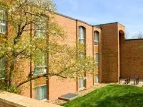

16. Bursley Hall
地址：1931 Duffield St.
简介：算是全校最老最大的宿舍之一，设施比较旧，房间大小适中，有台球桌和桌上足球，但都比较老了。有北校唯一的食堂，去年刚进行过改善，现在伙食很好（据说仅次于SQ），晚饭时间人很多。Lobby 旁边还有 Blue Apple 便利店，那儿的披萨有口皆碑。公交车站在宿舍后 面，爬个小山坡就到，早上上课时间乘车的学生非常多，经常会等一到两辆 Blue Bus 才能挤上车，但是可以倒走一站到Baits II，这样基本都能有座。宿舍在北校的山腰，步行五到十分钟能到北校工程学院各大楼，art school，music school， Pierpont，北校图书馆 Duderstadt，以及北校健身房 NCRB（NCRB正在装修，要到2018Fall才会重新营业）。Livng Arts 的学生被要求住在 Bursley。
推荐指数：三星半
（图片来源：thetab.com/）
17. Baits Houses
地址：1440 Hubbard
简介：目前只开放Baits II，专门提供给大一学生的宿舍，房间多为 Suite，设施很新。靠近 Bursley Hall， 附近有 Baits 的公交站。没有自己的食堂，用餐需要到 Bursley 的食堂，但是宿舍内有厨房。离工院教学楼很近，离 NCRB 也很近（NCRB正在装修，要到2018Fall才会重新营业）。这里靠近北校的后山，山脚流淌着 Huron River，天气好的时候景色宜人。
推荐指数：四颗星
（图片来源：annarbor.com）
18. Northwood III
地址：Cram Place Community Center, 2150 Cram Place 简介：Apartment 性质，有独立厨房、卫生间，还有公共的客厅区域， 提供给转学生和研究生，步行五到十分钟可以到 NCRB（NCRB正在装修，要到2018Fall才会重新营业），离车站也比较近，有停车场区域。如果要再食堂用餐还得 去 Bursley。房屋周围有草坪和烧烤的地方。
推荐指数：三星半
（图片来源：pinterest.com）
19. Northwood I&II
地址：Cram Place Community Center, 2150 Cram Place
简介：Apartment 性质，配有家具，提供给研究生，有独立厨房和卫生间，可以选择单人间，或者有室友。公交站比较分散，所以交通方便程度根据宿舍位置而定。房屋周围有草坪和烧烤的地方，处在一个比较安静的社区。
推荐指数：三星半
（图片来源：umaec.umich.edu）
20. Northwood IV&V
地址：Cram Place Community Center, 2150 Cram Place 简介：属于townhouse，提供给研究生，无家具设备，有地下室和储藏间。坐公交车比较麻烦，最好是有车会方便许多。周边有孩子常去的 playground，以及各种运动场地。
推荐指数：三星半
（图片来源：studentlife.umich.edu）